C2 time glide
A reflection becomes a symmetry only when paired with a half-period advance.
*1• ⟦m ↦ τ1/2⟧
G:(x,y,t) ↦ (−x,y,t+T/2), G²=(1,T)
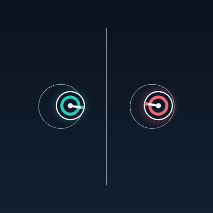
Visual catalog · 11 symmetry types · 33 loops
Each row shows one spacetime symmetry with three different motifs. A generator acts on
position and animation phase together: (x, t) ↦ (g·x, ±t + δ). The combined
move is a symmetry even when its spatial and temporal parts are not symmetries separately.
In the candidate notation below, the spatial prefix uses standard Conway orbifold or
rosette notation; the double brackets are proposed here. τa advances
normalized phase by a, while ιb reverses it and then
shifts by b. Notation and limitations.
A reflection becomes a symmetry only when paired with a half-period advance.
*1• ⟦m ↦ τ1/2⟧
G:(x,y,t) ↦ (−x,y,t+T/2), G²=(1,T)

A quarter-turn advances the loop by one quarter; four applications close the cycle.
4• ⟦r ↦ τ1/4⟧
S:(x,t) ↦ (Rπ/2x,t+T/4), S⁴=(1,T)
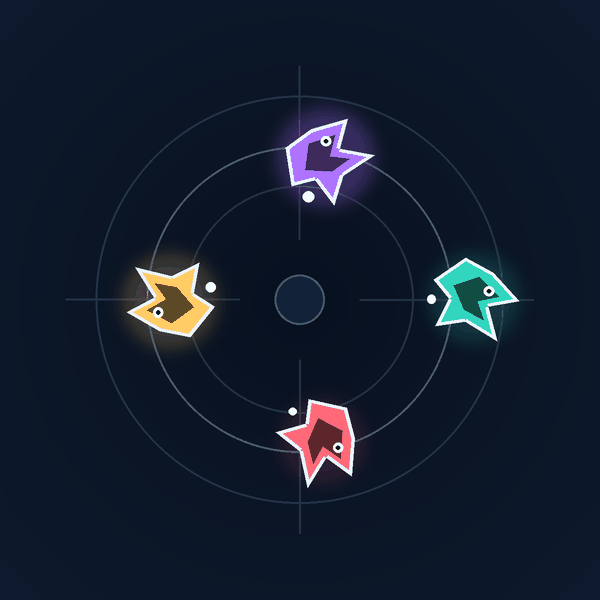
A one-cell translation and a third-period advance occur only as a coupled operation.
∞∞ ⟦a ↦ τ1/3⟧
D:(x,t) ↦ (x+a,t+T/3), D³=(x+3a,t+T)
Reflection, a half-cell glide, and a half-period advance are inseparable.
×× ⟦g(0,b/2) ↦ τ1/2⟧
G:(x,y,t) ↦ (−x,y+b/2,t+T/2), G²=YU
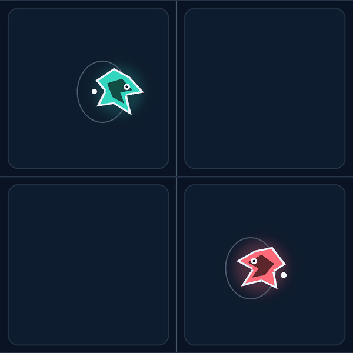
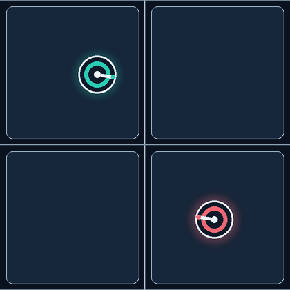
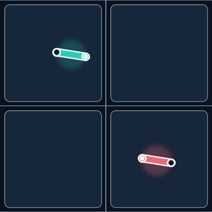
A half-cell translation is locked to reversing the direction of playback.
∞∞ ⟦q(a/2,0) ↦ ι0⟧
Q:(x,y,t) ↦ (x+a/2,y,−t), Q²=X
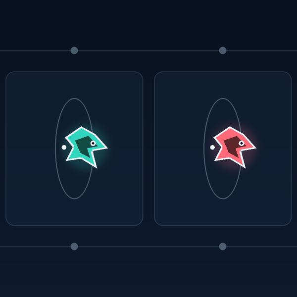
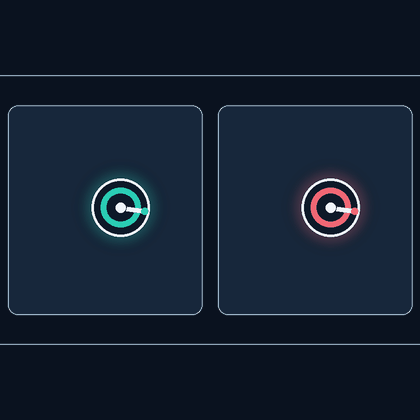
A quarter-turn reverses playback; its square leaves a pure half-turn.
4• ⟦r ↦ ι0⟧
Q:(x,t) ↦ (Rπ/2x,−t), Q²=Rπ, Q⁴=1
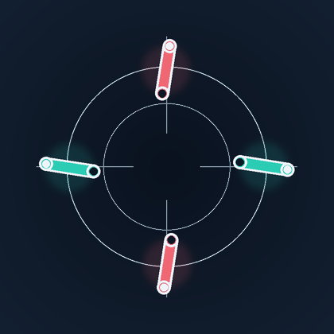
A threefold time screw and mirror/playback reversal obey the dihedral relation.
*3• ⟦r ↦ τ1/3, m ↦ ι0⟧
S³=U, M²=1, MSM=S⁻¹
Six connected petals expose a sixth-period phase chase around a rotation center.
6• ⟦r ↦ τ1/6⟧
S:(x,t) ↦ (Rπ/3x,t+T/6), S⁶=(1,T)
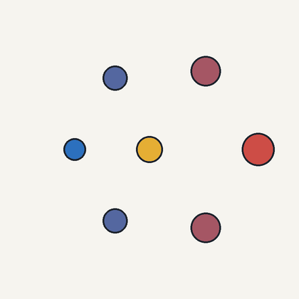
A lattice translation hands one fifth of the cycle from ribbon to ribbon.
o ⟦a ↦ τ1/5⟧
W:(x,t) ↦ (x+a,t+T/5), W⁵=(x+5a,t+T)
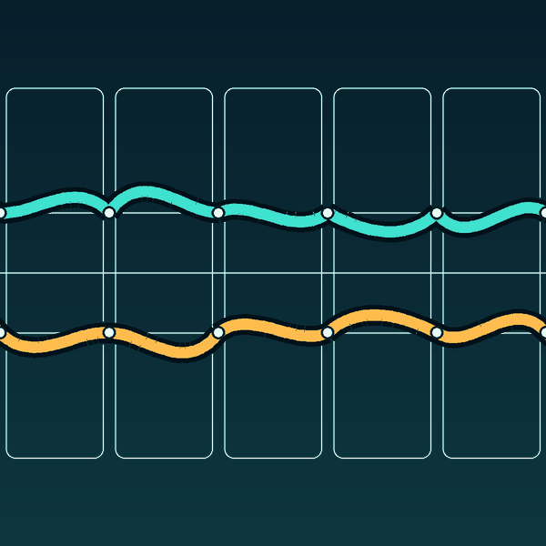
A quarter-time screw and a mirror/time reversal deform one closed square.
*4• ⟦r ↦ τ1/4, m ↦ ι0⟧
S⁴=U, M²=1, MSM=S⁻¹
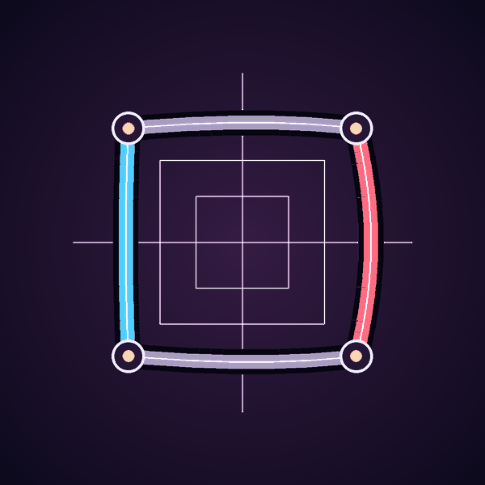
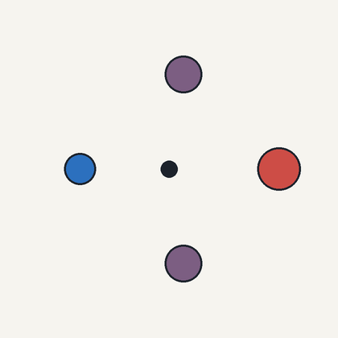
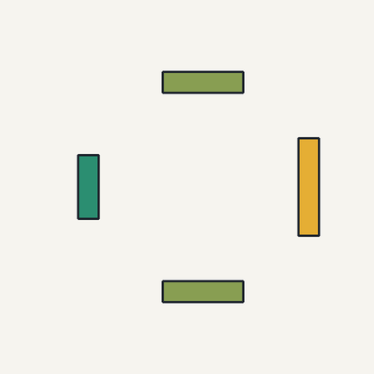
A diagonal half-lattice shift exchanges two phases separated by half a period.
o ⟦ℓ(a/2,b/2) ↦ τ1/2⟧
L:(x,y,t) ↦ (x+a/2,y+b/2,t+T/2), L²=XYU
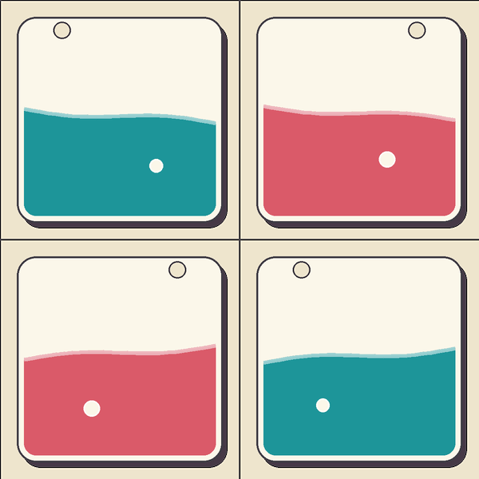